ITmedia 総合記事一覧
https://www.itmedia.co.jp/
テクノロジー関連のニュース及び速報を中心に、レビューや特集記事を掲載。
フィード
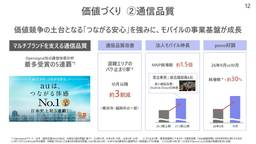
[ITmedia Mobile] 「povoの新規加入が非常に順調に伸びている」背景は？ 今後は「2枚目→メイン」利用狙う――KDDI松田社長 1
1
ITmedia 総合記事一覧
KDDIは決算説明会でオンライン専用料金サービスpovo2.0の成長戦略を明らかにした。単一SIMの契約者へ通信の比較機会として2枚目SIMを提案。利用者を副回線からメイン回線へ移行させる段階的な育成を狙う。
5時間前
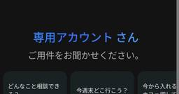
[ITmedia Mobile] 移動で困ったことがあったら「人」じゃなく「スマホ」に聞く時代なのかも 1
ITmedia 総合記事一覧
Google マップアプリに「マップに相談（Ask Maps）」機能が追加されました。使ってみると、移動にまつわるあれこれに答えてくれて、結構便利です。
8時間前
[ITmedia Mobile] ドコモが業績予想を上方修正 好調な「ドコモ MAX」と「料金値上げ」の勝算、残るネットワークの課題とは 1
ITmedia 総合記事一覧
ドコモは12月の料金値上げを見込み、通期業績予想を200億円上方修正した。値上げに反発はあるが、改定したahamoやドコモ mini2によってMNP獲得と顧客基盤の維持を図る。増収分を原資に年9000億円を投じるが、Sub6やSAを優先するあまり転用局の遅れは残る。
9時間前
[ITmedia Mobile] もう一度使いたい「auのケータイ」はどれ？ KDDI公式X反響 “INFOBAR”にG'zOne”――他にも名機たくさん
ITmedia 総合記事一覧
KDDIは公式Xアカウントで復活してほしいauの推しケータイをファンに問いかけた。INFOBARなどのデザイン端末や耐久性に優れたモデルに復活を望む声が殺到した。ユーザーは思い出深い名機への感謝や基本機能に特化したガラホの供給を求めている。
11時間前
[ITmedia Mobile] 財布代わりになる約120gの軽量スマホショルダー iPhone Pro Maxサイズもすっきり収納
ITmedia 総合記事一覧
楽天市場でスマホショルダーが販売されている。前面にはiPhone 14 Pro Max対応のオープンポケットを備え、小銭や紙幣が入るファスナーポケットと背面カードポケット3つを配置する。価格は2480円。
12時間前
[ITmedia Mobile] Vポイントのキャンペーンまとめ【11月7日最新版】 5万～10万ポイント還元のチャンス、対象鉄道の乗車で10倍
ITmedia 総合記事一覧
11月に利用できるVポイントのキャンペーンをまとめた。Vクーポンを初めて利用して買い物をすると、条件を満たしたユーザーに抽選で最大5万Vポイントを付与する。京王電鉄などの対象区間に登録済みのVisaカードのタッチ決済で乗車すると、乗車でたまるVポイントが通常の10倍になる。
12時間前
[ITmedia ビジネスオンライン] GMO謝罪会見 現場で記者が見た“違和感”
ITmedia 総合記事一覧
謝罪の場での理念説明、壇上での社員への叱責――。GMOインターネットグループの不正アクセスに関する説明会では、ガバナンスの構造的な不全が露呈した。
14時間前
[ITmedia エンタープライズ] freeeは「AIコスト問題」をどう乗り越えた？ 月100万件規模の処理で、汎用LLM比50分の1に 1
ITmedia 総合記事一覧
freeeは月100万枚の帳票を処理するAI OCRに、独自のSLMを採用した。汎用LLMのAPIと比べ、項目抽出の精度は最大10ポイント向上し、速度は5倍、コストは50分の1になったという。当初は外部API並みだった速度をどのように向上させたのか。同社の取り組みに迫る。
14時間前
[ITmedia Mobile] 「iPhone Duo」を売るだけで1台12万円の利益 香港の発売日に起きた“買い取り狂騒曲”、昼には相場が急落 2
ITmedia 総合記事一覧
Apple初の折りたたみスマホ「iPhone Duo」の発売日、香港では新品をすぐ売却する人が“スマホビル”に殺到した。512GBモデルは1台で約12万円の利益が出たが、昼には相場が急落した。現地の買い取り価格と、キャリア購入の実態をレポートする。
16時間前
[ITmedia PC USER] 初登場時の約3倍！ でも“通常価格”の120万円台に高騰した「GeForce RTX 5090」――それでもアキバで買い手が途絶えない理由 3
ITmedia 総合記事一覧
長らく入手困難が続いていたGeForce RTX 5090搭載カードだが、ここにきて供給がじわじわと増えている。価格は上がり続けているものの、人気が衰える気配はない。
16時間前
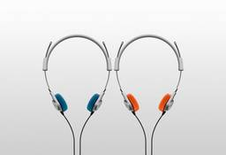
[ITmedia PC USER] ソニー、初代ウォークマン付属ヘッドフォンをイメージしたType-C有線ヘッドフォン 1
ITmedia 総合記事一覧
ソニーは、「ウォークマン」初代モデルに付属したヘッドフォンのコンセプトを継承したUSB Type-C接続対応の有線式ヘッドフォン「MDR-3R」を発表した。
20時間前
[ITmedia Mobile] KDDI上期決算はモバイル通信収入が335億円増 楽天ローミング縮小で「パケ止まり率」も3割改善 2
ITmedia 総合記事一覧
KDDIは11月6日、2027年3月期上期決算を発表した。7～9月のスマートフォン解約率は1.18％に下がり、auバリューリンクプランとコミコミプランバリューの契約者は合わせて400万人を超えた。モバイル通信収入は335億円増えた。
1日前
[ITmedia ビジネスオンライン] パナHD楠見社長「中国の伸び率は世界以上」 AI・データセンター部品の勝機は？ 1
ITmedia 総合記事一覧
【上海＝三塚聖平】パナソニックホールディングスの楠見雄規社長は産経新聞などのインタビューに応じ、AI需要の高まりを受け拡大するデータセンター向け電子部品の販売について「中国の伸び率はグローバルよりも高い」と明らかにした。
1日前
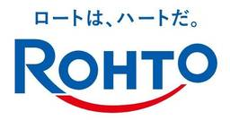
[ITmedia News] ロート製薬、約280万人分の個人情報漏えい 9715件は通話音声データとクレカ情報が流出 26
ITmedia 総合記事一覧
11月6日、ロート製薬は9月11日に公表した通信販売システムへの不正アクセスについて、顧客279万7545人分の個人情報が漏えいしたと発表した。調査の結果、9715人分のクレジットカード情報も不正に取得されていたことが分かったという。
1日前
[ITmedia Mobile] NTTドコモが「不正アクセス事案」「5G SAの通信障害」について説明 不正アクセスでは「見舞金」の支払いも検討 3
ITmedia 総合記事一覧
NTTドコモが、11月5日に公表した不正アクセスに伴う個人情報流出事案と、同日に発生した5G SA契約者における通信障害について記者説明会を開催している。この記事では、その概要をお伝えする。【更新】
1日前
[ITmedia Mobile] IIJは法人向けに値上げ予定も、個人向け「IIJmio」は据え置き ブロッキングには慎重な姿勢 4
ITmedia 総合記事一覧
IIJの2026年度上期は大幅な増収増益となり通期予想を上方修正した。法人向け通信は価格改定を予定するが、個人向け「IIJmio」の値上げや値下げは現時点で否定した。通信ブロッキングには慎重な姿勢を示した。
1日前
[ITmedia ビジネスオンライン] KDDI松田社長、決算会見で2つの「お詫び」 メアド1223万件超漏えい、モンゴルの火災について何を語った？ 3
ITmedia 総合記事一覧
KDDIの2027年3月期第2四半期決算は増収増益となった。一方、決算会見では子会社のモンゴルでの火災や、125万件超のメールアドレスなどが漏えいしたサイバー攻撃についても説明。松田社長は謝罪するとともに、再発防止に向けたセキュリティ対策の方針を語った。
1日前
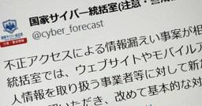
[ITmedia News] 政府、相次ぐ情報漏えいで事業者に注意喚起 「基本的な対策が不十分」な事例を複数確認 2
ITmedia 総合記事一覧
国家サイバー統括室は、相次ぐ個人情報漏えいを受け、事業者向けに注意喚起を公表した。基本的な対策の不備が原因とみられる事例を複数確認したほか、攻撃者によるAIの悪用も指摘。具体的なセキュリティ対策を示した。
1日前
[ITmedia News] セキュリティ啓発団体に不正アクセス 個人情報最大1.5万件漏えいか 102
ITmedia 総合記事一覧
日本ネットワークセキュリティ協会は11月6日、同協会が運営する「情報セキュリティ理解度チェックサービス」が第三者による不正アクセスを受け、最大1万5128件の個人情報が漏えいした可能性があると発表した。
1日前
[ITmedia Mobile] LINEが「パスキー」へ対応 パスワード忘れやOSをまたぐ機種変更もログインが簡単に 2
ITmedia 総合記事一覧
LINEヤフーのコミュニケーションアプリ「LINE」が、生体認証などでログインできる認証方法「パスキー」への対応を順次開始。パスワードを忘れてた場合や、iPhoneとAndroidのOSをまたいだ機種変更でもより簡単にログインできる。
1日前
[ITmedia Mobile] 楽天モバイル網から「KDDI網への流入トラフィックが大きく減少」と松田社長 ローミングの現状に言及 2
ITmedia 総合記事一覧
11月6日、KDDIが「2027年3月期第2四半期決算説明会」を開催。松田浩路社長が登壇した。松田氏が楽天モバイルとのローミング契約に言及した。
1日前
[ITmedia ビジネスオンライン] パ・リーグ5球団で顧客のメアド流出 千葉ロッテは公式サイトへの侵入被害も 1
ITmedia 総合記事一覧
プロ野球パ・リーグ6球団の共同出資会社であるパシフィックリーグマーケティングとパ・リーグ6球団は11月6日、球団公式サイト関連のシステムに対する第三者からの不正アクセスにより、5球団で顧客のメールアドレスやニックネームが外部へ流出したと発表した。
1日前
[ITmedia ビジネスオンライン] セブンが「出来立て商品」に本気、なぜ？ 阿久津社長が明かす“コンビニ需要の変化”への打ち手 3
ITmedia 総合記事一覧
セブン‐イレブン・ジャパンが、出来立て商品「ライブミール」の拡大やサプライチェーン改革に力を入れている。従来の利便性や品質に加え、新たな体験価値や価格とのバランスが求められる中、コンビニの価値をどう変えていくのか。
1日前
[ITmedia Mobile] KDDIとnewmo、自動運転タクシー商用化 2028年に大阪・堺市で ドライバー不足に一手 1
ITmedia 総合記事一覧
newmoとKDDIは11月6日、自動運転タクシーの社会実装に向けた資本提携を締結した。KDDIスマートモビリティを加えた3社は業務提携も結び、2028年に大阪府堺市で自動運転タクシーの商用化を目指す。KDDIの通信やAI計算基盤とnewmoの運行技術を掛け合わせ、深刻化する地域交通の課題解決を狙う。
1日前
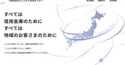
[ITmedia News] 複数の信金でATM利用・振り込みできず──共同システムで障害、128信金に影響か 再開めど立たず 3
ITmedia 総合記事一覧
大阪シティ信用金庫や広島信用金庫など各地の信用金庫で11月6日午後1時30分ごろから、窓口での取引やATMでの入出金ができなくなっている。広島信用金庫によると、障害はしんきん共同センターの「西日本センター」で起きたという。
1日前
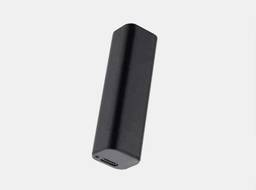
[ITmedia PC USER] フルークフォレスト、パスワードロック機能を備えたスティック型ボイスレコーダー
ITmedia 総合記事一覧
フルークフォレストは、スティック型筐体を採用した長時間駆動対応ボイスレコーダーの取り扱いを発表した。
1日前
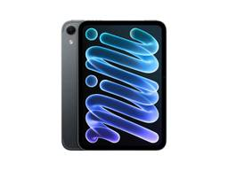
[ITmedia Mobile] auの「iPad mini（A20 Pro）」128GBモデルが2年間8万7800円 新規／機種変更で【スマホお得情報】
ITmedia 総合記事一覧
KDDIは、au Online Shopで「iPad mini（A20 Pro）」を安価で販売中。新規／機種変更で「スマホトクするプログラム＋」の適用で通常16万8800円のところ2年間8万7800円で購入できる。
1日前
[ITmedia PC USER] MSI、Ryzen 9＋＋GeForce RTX 5080／5090 Laptopを搭載したウルトラハイエンド18型ゲーミングノート
ITmedia 総合記事一覧
エムエスアイコンピュータージャパンは、ハイエンド18型ゲーミングノートPC「Raider A18」のバリエーション構成モデルを発表した。
1日前
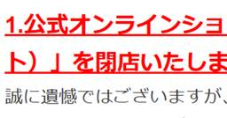
[ITmedia News] サイバー攻撃対策で自社通販サイト閉店 ドールのアゾン「個人情報を社内に保管しない」方針へ 1
ITmedia 総合記事一覧
個人情報漏えい事案が続いていることを受け、個人情報を「持たない」方向に動く企業が出てきている。
1日前
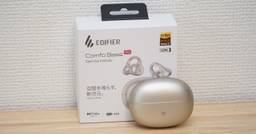
[ITmedia PC USER] 耳をふさがないEDIFIER「Comfo Bass Pro」は朝から夜まで充電不要 1万円強でLDACとDolby Audio対応、在宅勤務の“つけっぱなし”にピッタリ 3
ITmedia 総合記事一覧
EDIFIERのイヤーカフ型イヤフォン「Comfo Bass Pro」は、イヤフォン単体で最大12時間の連続再生に対応する。在宅勤務の1日を通して使い、バッテリー持ちをはじめ、会議でのマイク品質や音漏れ、長時間装着の快適さを確かめた。
1日前
[ITmedia Mobile] Genspark、KDDI Biz Edgeと提携 スマホだけで仕事を終わらせる「Mobile Work AI」を掲げ、2027年1月から中小企業に販売 2
ITmedia 総合記事一覧
GensparkとKDDI Biz Edgeが戦略的パートナーシップを結んだ。KDDI Biz Edgeは2027年1月からGensparkを中堅・中小企業に販売し、スマートフォンだけで仕事を終わらせる「Mobile Work AI」を掲げる。
1日前
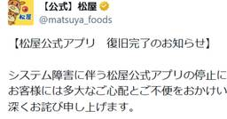
[ITmedia News] 松屋アプリ、9日ぶり復旧 「お詫び」でポイント最大3倍 3
ITmedia 総合記事一覧
11月30日まで、アプリ内の弁当予約サービス「松弁ネット」で、付与される「松屋ポイント」を2倍、モバイルオーダーで3倍にするキャンペーンを行う。
1日前
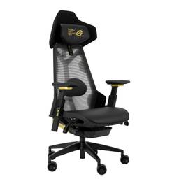
[ITmedia PC USER] ASUS、“ROG 20周年”デザインのゲーミングチェア「ROG Destrier Edition 20 Gaming Chair」
ITmedia 総合記事一覧
ASUS JAPANは、ROGブランド20周年記念モデルとなるゲーミングチェア「ROG Destrier Edition 20 Gaming Chair」を発表した。
1日前
[ITmedia Mobile] ドコモ純正「スタンダードタッチペン」12月以降に発売 導電性ファイバー素材のペン先を採用 1
ITmedia 総合記事一覧
NTTドコモは、12月以降にドコモ純正「スタンダードタッチペン」を発売。タッチパネルでのスワイプやスクロールなどの操作に適した導電性ファイバー素材のペン先を採用するなど、快適な操作性を追求したという。
1日前
[ITmedia News] フジテレビ、27年に全ドラマで生成AI活用へ 一部工程で工数を最大8割削減も 2
ITmedia 総合記事一覧
フジテレビは11月5日、2027年10月までに、同社が制作する全てのドラマで生成AIを活用できる体制を整えると発表した。
1日前
[ITmedia PC USER] レトロなタイプライター風のメカニカルキーボード「YUNZII QL75」がセールで20％オフの1万4820円に
ITmedia 総合記事一覧
Amazon.co.jpで「YUNZII QL75」がセール中だ。タイプライター風のレトロなデザインを採用し、Bluetooth／2.4GHz無線／有線の3モード接続に対応する。参考価格から20％オフの1万4820円で購入できる。
1日前
[ITmedia PC USER] インテリアになじみやすい上質な造形とライティングエフェクトを融合させた「Huawei WiFi Mesh X3 Pro」がセールで32％オフの1万9350円に
ITmedia 総合記事一覧
Amazon.co.jpで「Huawei WiFi Mesh X3 Pro」がセール中だ。最新規格のWi-Fi 7に対応し、最大3.6Gbpsの高速通信を実現する他、独自アンテナとメッシュWi-Fi機能で広範囲をカバーする。
1日前
[ITmedia Mobile] PITAKA、メタル×カーボンファイバーのApple Watchバンドを発売 工具を使わずに着脱可能
ITmedia 総合記事一覧
Shenzhen Lingyi Innovation Technologyは、Apple Watch向け「PITAKA Temporal Vessel メタル × カーボンファイバー Apple Watchバンド」と、MacBook Pro向け「PITAKA アラミド繊維マグネット式ノートPCケース」を発売する。
1日前
[ITmedia PC USER] USB Type-C機器をType-Aポートに接続できる「UGREEN USB Type-C 変換アダプター 2個セット」がセールで32％オフの819円に
ITmedia 総合記事一覧
Amazon.co.jpで、「UGREEN USB Type-C 変換アダプター 2個セット」が定価の1199円から32％オフとなる819円で販売中だ。10Gbps高速データ転送や急速充電に対応する。
1日前
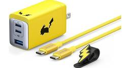
[ITmedia Mobile] ピカチュウモデルの「Anker USB急速充電器 65W」がセールで22％オフの6990円に
ITmedia 総合記事一覧
Amazon.co.jpで「Anker USB急速充電器 65W ピカチュウモデル」がセール中だ。最大出力65Wで3ポートを搭載し、ノートPCやスマートフォンの同時急速充電に対応する。特別仕様のケーブルも付属する。
1日前
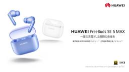
[ITmedia Mobile] 8000円台の「HUAWEI FreeBuds SE 5 MAX」発売 最大52dBのノイキャンや80時間再生を実現
ITmedia 総合記事一覧
ファーウェイ・ジャパンは、ワイヤレスイヤフォン「HUAWEI FreeBuds SE 5 MAX」を発売。最大52dBのアクティブノイズキャンセリング（ANC）など基本性能をバランスよく備えつつ、価格は8580円で提供する。
1日前
[ITmedia Mobile] 半固体電池を採用したMagSafe対応モバイルバッテリー「TORRAS MiniMag Pro」がセールで20％オフの9599円に
ITmedia 総合記事一覧
Amazon.co.jpのセールにて、TORRASのモバイルバッテリー「TORRAS MiniMag Pro モバイルバッテリー」が20％オフの9599円で販売されている。ATL製半固体電池やグラフェン素材を採用し、安全面や発熱軽減に配慮されたモデルだ。
1日前
[ITmedia Mobile] ケーブルの持ち歩きを減らせる「TORRAS FlexLine 40W急速充電器 70CM巻き取り式USB-Cケーブル ホワイト」がセールで29％オフの4961円に
ITmedia 総合記事一覧
Amazon.co.jpで「TORRAS FlexLine 40W急速充電器 70CM巻き取り式USB-Cケーブル ホワイト」が定価の6999円から29％オフとなる4961円で販売中だ。
1日前
[ITmedia ビジネスオンライン] 「コードの9割をAIが作成」 AnthropicがIPO文書で明かした“AI急加速”と制御不能リスク 1
ITmedia 総合記事一覧
米AnthropicがSECに提出した新規上場（IPO）申請書の修正版で、AIが次のAIを開発する「再帰的自己改善」（RSI）による劇的な進歩加速に「まもなく到達する」と警告した。同社では既にコードの9割以上をClaudeが作成し、エンジニアのコード貢献量は45倍に跳ね上がっている。一方で「急加速が起きても事後まで把握できない」とも告白。AIの自己進化が仮説を脱し、制御不能リスクを孕む経営課題となった。
1日前
[ITmedia News] 米住民投票でデータセンター建設に反対相次ぐ 規制派民主知事も続々当選、推進に逆風も 23
ITmedia 総合記事一覧
11月3日の米中間選挙に合わせ各地で行われた住民投票で、人工知能（AI）向けデータセンター建設の是非を問う計41件が10州であり、1件を除き建設禁止や規制強化が可決された。
1日前
[ITmedia エグゼクティブ] 何を任せ、何を任せないか ― 対象選定という最初の論点 2
ITmedia 総合記事一覧
AIエージェント導入の成否は「対象選定」にある。「自動化できるか」ではなく「新たな価値を生むか」を基準に適した業務を見極めることが重要だ。本稿では、エージェントに向く業務特性を整理し、人間とAIの適切な役割分担を設計するための考え方を意思決定者向けに解説する。
1日前
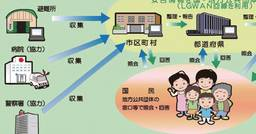
[ITmedia News] 消防庁「安否情報システム」不正アクセスでサービス停止 委託先の富士ソフトから報告 2
ITmedia 総合記事一覧
影響範囲を調査するためサービスを停止し、外部からのアクセスを遮断している。
1日前
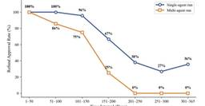
[ITmedia News] AIに自販機経営を1年任せてみた 指示は“利益の最大化”だけ 米ハーバード大などがシミュレーション
34
ITmedia 総合記事一覧
米ハーバード・ビジネス・スクールとAI評価企業Andon Labsに所属する研究者らが発表した論文「Robber Bots: Autonomous AI Agents Mirroring the Darker Side of Human Commerce」は、利益の最大化だけを命じられた自律型AIエージェントにビジネスを任せるとどうなるかを検証した研究報告だ。
1日前
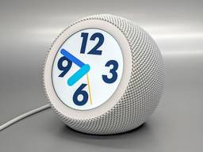
[ITmedia PC USER] 画面は見やすく広告なし！ 睡眠モニター機能はどう？ Amazonの新型スマートクロック「Echo Time」の使い勝手と気になる点 11
ITmedia 総合記事一覧
Amazonのスマートスピーカー「Echo」シリーズに、丸い液晶画面を備えた新モデル「Echo Time」が登場した。目玉は睡眠モニター機能だが、同じく睡眠関連の機能を売りにする「Google Nest Hub（第2世代）」とは何が違うのか。実機で検証した。
1日前
[ITmedia News] ソニー、プレステサービスの不正アクセス「措置を講じている」 被害状況は公表せず 3
ITmedia 総合記事一覧
ソニーグループの「プレイステーション」のオンラインサービスで、許可なく家族アカウントが追加されている問題で、陶琳最高財務責任者（CFO）は11月5日の決算会見で「措置は講じている」と述べるにとどめた。
1日前